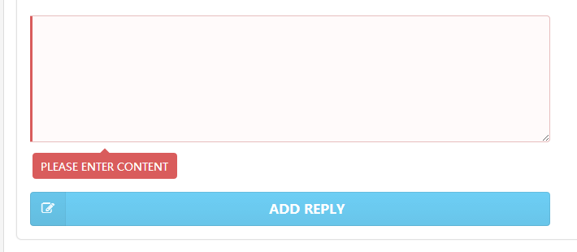

在上一章中，我们对于无内容的添加没有进行处理，现在我希望添加一个出错显示，告诉 用户要输入内容。当成功输入提交内容后，出错提示消失。
出错信息的样式也是从 sementic-ui 中取出来的，基本的格式是：
<div class="field error">
<textarea></textarea>
<div class="ui red pointing prompt label transition" style="display: inline-block;">Please enter content</div>
</div>有两个地方要注意：
<div class="field"> 的 class 上添加 error, 这样整个 <div> 都是红色的。最终的展示效果是这样的:

我们现在就是要实现这样的动态效果。
将原来输入框的代码改为：
...
<!-- validate begin -->
<div class="field" ms-class="error:content_error">
<textarea ms-duplex="comment"></textarea>
<div class="ui red pointing prompt label transition" style="display: inline-block;" ms-visible="content_error">Please enter content</div>
</div>
<!-- validate end -->
...这里増加了两个新的属性 ms-class 和 ms-visible 。
可以用它来増加新的属性，基本语法为：
ms-class="classname:expression"classname 为即将増加的 CSS class 的名字。 : 后面的是一个表达式，可以为一个 变量。当为 true 时，这个 classname 将被添加，否则将去掉。
如果我们有多个 class 要添加，并且判断条件不同，因为如果定义多个 ms-class 会造 成属性重复，所以为了解决这个问题， Avalon 提供了特殊的写法，使用 ms-class-1, ms-class-2 这样的写法，区分不同的 class。很方便，很灵活。
因此 ms-class="error:content_error" 意味着，当 Model 中的变量 content_error 为 true 时，表示有错误， error 将被添加到元素的 class 上。
可以用它来显示或隐藏某个元素，类似于使用 display:none 。
所以上面的代码 ms-visible="content_error" 就表示，当 content_error 为 true 时，对应的元素，即出错元素将显示出来。
在 comments Model 中进行如下修改：
...
//begin of add
vm.comment = '';
vm.content_error = false;
vm.add = function(){
if (vm.comment.trim()){
//ajax request process
vm.comments.push({"id":1,
"author":"John Smith",
"date":"just now",
"content":vm.comment,
"avatar":"./avatar3.jpg"}
);
vm.comment = '';
vm.content_error = false;
}else{
vm.content_error = true;
}
}
//end of add
...修改的地方为：
vm.content_error = false; 的初始化设置content_error 的值。就这么简单。
我们甚至可以实现，在出错的情况下，如果输入了内容就让出错提示消失的功能。具体的 实现作为练习，大家可以自已试一下。也可以看下面的“演示代码2” 。